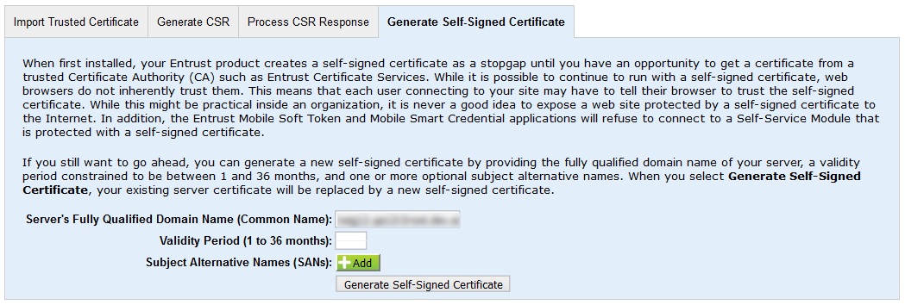

|
IdentityGuard Server 13.0 Administration Guide |
|
IdentityGuard Server 13.0 Administration Guide |
When first installed, your Entrust IdentityGuard product creates a self-signed certificate to use until you get a certificate from a trusted Certificate Authority (CA) such as Entrust Certificate Services. While it is possible to continue to run with a self-signed certificate, web browsers do not inherently trust them. This means that each user connecting to your site might have to trust the self-signed certificate. While this might be practical inside an organization, it is not secure to expose a website protected by a self-signed certificate to the Internet.
If you still require it, use the following procedure to generate a new self-signed certificate.
To generate a self-signed certificate
1. Log in to the Administration interface..
2. From the top menu, select System, then click the Key Store Management tab.
3. Near the bottom of the page, click the Generate Self-Signed Certificate tab.

The form automatically detects and populates the Server's Fully Qualified Domain Name (Common Name) field with your server's FQDN.
4. Verify that the value entered into Server's Fully Qualified Domain Name (Common Name) field is correct.
5. Enter the number of months the certificate will be valid.
6. Click Generate Self-Signed Certificate.
A message prompts you to confirm the action.
7. Click OK. A message confirms the success of the action.
8. Click OK.
The renewed self-signed certificate appears as the tomcat entry under Private Keys with new entry and expiry dates.